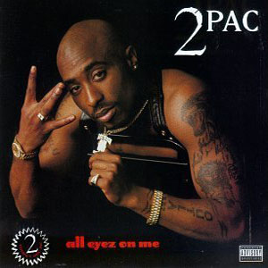

2PAC

Информация
• Имя при рождении: Lesane Parish Crooks
• Дата рождения: 16 июня 1971
• Дата смерти: 13 сентября 1996(25 лет)
• Лейблы: Death Row Records, Interscope Records и Amaru Entertainment
Навигация

Track 1
Artist 1

Ту́пак Ама́ру Шаку́р — американский рэпер, продюсер и актёр. Считается одним из величайших хип-хоп-исполнителей в истории. По состоянию на 2015 год, по всему миру было продано более 80 млн записей Тупака Шакура. Его двойной студийный альбом All Eyez on Me, а также сборник хитов входят в список самых продаваемых альбомов в США. Журнал Rolling Stone поместил Шакура на 86 позицию в списке 100 величайших исполнителей всех времён. Шакур оказал колоссальное влияние на множество хип-хоп-исполнителей, включая Эминема, Snoop Dogg, Нас, Уиз Халифа, Лил Уэйна, Дрейка, Кендрика Ламара, 50 Cent, The Game, Nipsey Hussle и многих других. Подавляющее большинство песен Шакура повествуют о тяжёлой жизни в гетто, насилии, бедности, расизме и проблемах современного общества. Большая часть родственников Шакура являлись членами афроамериканской леворадикальной организации «Чёрные пантеры». В последние годы своей жизни Шакур являлся непосредственным участником соперничества двух побережий, повлёкшей за собой вражду с другими хип-хоп-исполнителями и музыкальными продюсерами, включая лидера Восточного Побережья The Notorious B.I.G. и лейбла Bad Boy Records.
Детство и юность
Шакур родился 16 июня 1971 года в Восточном Гарлеме, Нью-Йорк. При рождении получил имя Лисейн Пэриш Крукс, однако год спустя, по настоянию тёти, родители изменили ему имя на Тупак Шакур, назвав его в честь южноамериканского революционера XVIII века Тупака Амару II. Его мать, Афени Шакур, и отец, Билли Гарланд, являлись участниками афроамериканской леворадикальной организации «Чёрные пантеры». Младенец родился через месяц после того, как его мать была оправдана по более чем 150 обвинениям в «заговоре против правительства Соединённых Штатов Америки» в ходе так называемого дела «Пантер-21». Афени вовлекла в деятельность партии даже своего сына, который сделал на теле татуировку с изображением пантеры.
С раннего детства Шакур был тесно связан с членами чёрной националистической боевой организации «Чёрная Освободительная Армия», члены которой впоследствии понесли уголовные наказания за тяжкие преступления. Его крёстный отец, Элмер «Джеронимо» Пратт, являлся высокопоставленным членом «Чёрных Пантер» и был осуждён за убийство школьного учителя при попытке ограбления в 1968 году, однако позже наказание было отменено.
Его отчим, Мутулу, четыре года находился в списке самых разыскиваемых преступников ФБР. Мутулу был арестован в 1986 за вооружённое ограбление, в ходе которого были убиты двое полицейских и охранник. Тётя Тупака, Ассата Шакур, была заключена под стражу в связи с убийством офицера полиции штата, но спустя некоторое время она бежала из исправительного учреждения. Шакур имеет младшую единоутробную сестру по имени Секайва и старшего сводного брата через первый брак отчима, Моприма.
В возрасте 12 лет Шакур вступил в 127-й уличный ансамбль Гарлема, впоследствии сыграв роль Молодого Трэвиса в пьесе A Raisin in the Sun. В 1986 году семья переехала в Балтимор, Мэриленд. После окончания второго курса средней школы Пола Лоренса Данбара, Шакур перевёлся в школу искусств Балтимора, где изучал актёрское искусство, поэзию, джаз и балет. Он выступал в пьесах Уильяма Шекспира, а также играл роль короля мышей в балете в двух актах Петра Чайковского Щелкунчик (англ. The Nutcracker).
Зачастую он побеждал в рэп-состязаниях и считался лучшим рэпером своей школы. В школе Пола Лоренса Данбара он запомнился как один из самых популярных учеников из-за своего чувства юмора, рэпа, а также за умение находить общий язык с разными людьми. С детства вплоть до своей смерти Шакур являлся близким другом Джады Корен Пинкетт-Смит.В 1988 Шакур вместе со своей семьёй переезжает в Марин-Сити, Калифорния. Вскоре он поступает в среднюю школу Тамалпэйс. Шакур внёс значительный вклад в развитие актёрского искусства в школе, осуществив несколько театральных представлений. Вдобавок он начал посещать курсы поэзии писательницы, поэта и педагога Лейлы Штейнберг.
1987—1993: Восхождение к славе
При всём при том, что Шакур начал записываться ещё в 1987, его взлёт к славе наступил в составе хип-хоп-группы Digital Underground, которые записали саундтрек Same Song к фильму «Сплошные неприятности» (англ. Nothing But Trouble). Позднее Same Song вошёл в EP This Is an EP Release. Затем Шакур выпустил свой дебютный сольный студийный альбом 2Pacalypse Now. Хотя первоначально альбом был издан Interscope Records, впоследствии времени права на альбом перешли Amaru Entertainment, основателем которого является мать Тупака, Афени Шакур. Название альбома ссылается на художественный фильм 1979 года о войне во Вьетнаме «Апокалипсис сегодня» (англ. Apocalypse Now). Альбом вызвал значительную полемику среди государственных деятелей, в том числе из-за содержания треков Trapped и Brenda’s Got a Baby, в которых Шакур критиковал несправедливую социальную политику государства. MTV включило 2Pacalypse Now в список «сертифицированной классики хип-хопа», вдобавок, наряду с Me Against the World, All Eyez on Me и The Don Killuminati: The 7 Day Theory, альбом удостоился золотого статуса от RIAA. Альбом включает три сингла: Brenda’s Got a Baby, Trapped и If My Homie Calls. 2Pacalypse Now оказал огромное влияние на таких хип-хоп-исполнителей, как Nas, Eminem, The Game и Talib Kweli, которые впоследствии заявили, что 2Pacalypse Now являлся их творческим вдохновением.
Зимой 1993 вышел второй студийный альбом Шакура Strictly 4 My N.I.G.G.A.Z…. Пластинка содержит множество треков, подчёркивающих политические и социальные убеждения рэпера. Альбом получился более коммерчески успешным, нежели дебютный релиз. Именно Strictly 4 My N.I.G.G.A.Z… рассматривается как «прорывной» альбом в карьере Шакура. Альбом включил такие хиты, как Keep Ya Head Up и I Get Around, а также достигнул платинового статуса. К 2004 году альбом был продан в количестве 1 366 000 экземпляров.
1993—1995: Расцвет
В конце 1993 Шакур вместе со своими друзьями образовал группу Thug Life, куда вошли Big Syke, Macadoshis, его брат Mopreme Shakur и Rated R. Осенью 1994 группа выпустила единственный студийный альбом под названием Thug Life: Volume 1, который позже получил золотую сертификацию. В альбом вошёл сингл Pour Out a Little Liquor, спродюсированный Johnny Jackson, который также занимался продюсированием львиной доли All Eyez on Me. Среди наиболее известных треков T'hug Life: Volume 1 выделяются Bury Me a G, Cradle to the Grave, Pour Out a Little Liquor, How Long Will They Mourn Me? и Str8 Ballin. Несмотря на то, что изначально альбом должен был охватывать больше, нежели 10 треков, некоторые песни Interscope Records не пропустил в связи с их спорным содержанием. Запись How Long Will They Mourn Me? впоследствии вошла в сборник лучших песен Тупака Шакура. В большинстве случаев коллектив Thug Life выступал без Шакура.
Зимой 1995 вышел первый сингл с альбома Me Against The World — Dear Mama. Сингл возглавил хит-парад самых горячих рэп-синглов, а также занял девятую строчку в хит-параде Billboard Hot 100. Летом того же года сингл стал платиновым и был поставлен Billboard на 51 место в списке лучших синглов 1995 года. Второй сингл, So Many Tears, был обнародован летом, спустя четыре месяца после выхода первого сингла. So Many Tears достиг шестого места в хит-параде самых горячих рэп-синглов, а также поместился на 44-й позиции в Billboard Hot 100. Temptations вышел осенью, став третьим и финальным синглом с альбома. Temptations стал менее коммерчески успешным, нежели первые два, заняв 13 строчку в хит-параде самых горячих рэп-синглов, а также 68-ю в Billboard Hot 100. Третий альбом Шакура, Me Against The World, был комплиментарно встречен критиками, некоторые из которых заявили, что альбом является лучшим творением Шакура за всю его карьеру. Альбом рассматривается как один из величайших и наиболее влиятельных альбомов за всю историю. На премии Soul Train Music Awards 1996 года альбом победил в номинации «Лучший рэп-альбом». К 2011 году Me Against The World был продан в количестве 3 524 567 экземпляров.
The Notorious B.I.G. и Junior M.A.F.I.A.
В 1993 году, когда Шакур был в Лос-Анджелесе, the Notorious B.I.G. попросил местного барыгу познакомить его с Тупаком, и они быстро стали друзьями. Они общались всякий раз, когда Шакур прилетал в Нью-Йорк или B.I.G. в Лос-Анджелес.В этот период, на их концертах, Шакур мог позвать B.I.G. на сцену, чтобы зачитать вместе.Совместно, они записали такие песни как: "Runnin' from tha Police" и "House of Pain". По слухам, B.I.G. предлагал Шакуру продюсировать его, тогда Тупак посоветовал ему Шона Комбса(P.Diddy), говоря, что тот может сделать из него звезду. В то время, жизнь Шакура была сравнимо лучше чем у B.I.G. который ещё не поднялся. Шакур предлагал B.I.G. присоединиться к его группе Thug Life, но вместо этого, он решил основать свою, the Junior M.A.F.I.A., со совими друзьями из Бруклина Lil' Cease и Lil' Kim. Шакур и B.I.G. поссорились после того, как Пак был подстрелен на Quad Studios в 1994.
1995—1996: Последние записи
Осенью 1995 Шакур записывает, а зимой 1996 публикует свой четвёртый студийный альбом All Eyez on Me. Нередко этот альбом оценивается как один из лучших рэп-альбомов 1990-х. В апреле 1996, всего через два месяца после релиза, All Eyez on Me удостоился двух платиновых сертификатов, а к 1998 году получил девять платиновых сертификатов. Синглы How Do U Want It и California Love достигли первой строчки Billboard Hot 100. Кроме того, альбом является первым коммерческим студийным рэп альбомом в истории, который был опубликован в двух частях. All Eyez on Me вышел на двух компакт-дисках и четырёх грампластинках. В первую неделю продаж альбом купили 566’000 раз. К концу 1996 пластинка была продана тиражом в 5 миллионов экземпляров. На церемонии 1997 Soul Train Music Awards альбом ожидаемо победил в категории «Лучший рэп-альбом года». Также на 24-й церемонии American Music Awards Шакур победил в номинации Favorite Rap/Hip-Hop Artist («Самый любимый хип-хоп-исполнитель года»). Осенью 1996 в свет вышел пятый, последний студийный альбом Шакура, The Don Killuminati: The 7 Day Theory. Посмертный альбом вышел под новым сценическим именем Шакура — Makaveli. Альбом был записан за семь дней: три дня — на написание текстов и четыре дня — на работу над альбомом в студии. В 2005 MTV включило альбом в список «Величайших хип-хоп альбомов за всю историю». The Don Killuminati: The 7 Day Theory достиг первого места в Billboard 200, а также аналогичной позиции в Billboard Top R&B/Hip-Hop Albums. Летом 1999 альбом удостоился четырёх платиновых сертификатов.
All Eyez on Me
В 1995 году, когда Шакур сидел в тюрьме, его мать была на грани потери дома. C женой Шакура, Кейшей Моррис связался основатель Death Row Records, Сьюдж Найт в Лос-Анджелесе. Сообщается, что мать Шакура незамедлительно получила 15 000 долларов. После августовского визита в исправительное учреждение Клинтон на севере штата Нью-Йорк Найт отправился на юг, в Нью-Йорк, чтобы принять участие во 2-й ежегодной церемонии вручения наград Source Awards.  Тем временем между Death Row и Bad Boy Records назревало соперничество в хип–хопе между Восточным и Западным побережьями. In October 1995, В октябре 1995 года Найт снова навестил Шакура в тюрьме и внес залог в размере 1,4 миллиона долларов. Шакур вернулся в Лос-Анджелес и присоединился к камере смертников, поскольку апелляция на его приговор, вынесенный в декабре 1994 года, находилась на рассмотрении. Четвертый альбом Шакура, All Eyez on Me, вышел 13 февраля 1996 года. Это был первый двойной альбом в рэпе, который включал два из трех альбомов, запланированных по контракту Шакура с Death Row, и содержал пять синглов. На альбоме Шакур читает рэп о гангстерском образе жизни, оставляя позади свои прежние политические идеи. Благодаря выдающемуся продюсированию, в альбоме больше партийных треков и часто торжествующий тон. Музыкальный журналист Кевин Пауэлл отметил, что Шакур, выйдя из тюрьмы, стал более агрессивным и "казался полностью другим человеком". All Eyez on Me стал лучшим R&B/соул-альбомом или рэп-альбомом года на Soul Train Music Awards 1997 года. В 1997 году на American Music Awards Шакур получил награду "Любимый рэп/хип-хоп исполнитель".Альбом получил 9-кратный мультиплатиновый статус в июне 1998 года,и 10-кратный в июле 2014 года.
Посмертные альбомы
На момент его смерти уже был закончен пятый сольный альбом The Don Killuminati: The 7 Day Theory, записанный под сценическим псевдонимом Макавели. Он был записан летом 1996 года и выпущен в том же году. Текст был написан и записан за три дня, а сведение заняло еще четыре дня. В 2005 году, MTV.com "7 Day Theory" занял 9-е место среди величайших альбомов хип-хопа за всю историю, а к 2006 году стал классическим альбомом. Его особая острота, заключенная в боли и ярости, созерцании и вендетте, находит отклик у многих поклонников.
Гибель
В ночь на 7 сентября 1996 года Шакур вместе со своим менеджером, Шугом Найтом, присутствовал на боксёрском поединке между Майком Тайсоном и Брюсом Селдоном в MGM Grand в Лас-Вегасе, Невада. После окончания поединка один из партнёров Найта повстречал в вестибюле одного из участников банды Southside Compton Crips — Орландо Андерсона. Ранее, в том же году, Андерсон участвовал в ограблении члена вражеской банды Mob Piru, который, в свою очередь, имел связи с Шугом Найтом. Партнёр Найта рассказал Шакуру о присутствии одного из грабителей [Андерсона] в здании, после чего окружение Шакура атаковало Андерсона. Драку зафиксировала видеокамера отеля. После потасовки Шакур вместе с Найтом отправились в Club 662 (ныне именуется как ресторан/клуб Seven). Шакур сел на пассажирское место в чёрном автомобиле Найта, BMW 750iL, после чего в сопровождении свиты отправился в клуб.
В промежуток времени с 23:00 по 23:05 полиция остановила автомобиль Найта по причине отсутствия регистрационных знаков транспорта,
а также за чрезвычайно громкое прослушивание музыки; но через несколько минут полиция, не выписав штрафа, отпустила компанию.
В 23:15 с правой стороны к автомобилю Найта приблизился белый Cadillac последней модели, после чего один из пассажиров Кадиллака опустил стекло
автомобиля и быстро произвёл несколько выстрелов. Четыре пули попали в Шакура — две пули угодили в грудную клетку (одна из них попала в правое лёгкое),
и по одной в руку и в бедро. Найт был ранен в голову осколком автомобильного стекла. Телохранитель Фрэнк Александр заявил, что собирался ехать
в клуб в одной машине с Найтом и Шакуром, однако в последний момент Шакур попросил его пересесть в автомобиль своей невесты, Кидады Джонс,
ссылаясь на то, что может не хватить транспорта для переезда из клуба в отель.  В документальном фильме Before I Wake телохранитель сообщил, что одна из машин погналась за нападавшими, однако он [телохранитель]
никогда не слышал о тех, кто находился в белом «кадиллаке». Вскоре на место происшествия прибыли полицейские и медработники;
последние отвезли Найта и Шакура в университетский медицинский центр Южной Невады (UMC).
Согласно рапорту Криса Кэрролла (первого полицейского, прибывшего на место преступления), последними словами Шакура были «Fuck you».
В госпитале, после нескольких попыток встать с кровати, Шакур, под воздействием сильных обезболивающих,
был помещён в аппарат искусственного жизнеобеспечения и в конечном итоге, при помощи барбитуратов, переведён в искусственную кому.
Днём 13 сентября 1996 года, несмотря на попытки врачей остановить внутреннее кровотечение, Тупак Шакур скончался
в отделении реанимации и интенсивной терапии. Мать Тупака, Афени Шакур, приняла решение прекратить попытки врачей вернуть к жизни своего сына.
В 16:03 по местному времени врачи зафиксировали смерть.
Официальная причина смерти — дыхательная недостаточность и остановка сердца в связи с многочисленными огнестрельными ранениями.
В документальном фильме Before I Wake телохранитель сообщил, что одна из машин погналась за нападавшими, однако он [телохранитель]
никогда не слышал о тех, кто находился в белом «кадиллаке». Вскоре на место происшествия прибыли полицейские и медработники;
последние отвезли Найта и Шакура в университетский медицинский центр Южной Невады (UMC).
Согласно рапорту Криса Кэрролла (первого полицейского, прибывшего на место преступления), последними словами Шакура были «Fuck you».
В госпитале, после нескольких попыток встать с кровати, Шакур, под воздействием сильных обезболивающих,
был помещён в аппарат искусственного жизнеобеспечения и в конечном итоге, при помощи барбитуратов, переведён в искусственную кому.
Днём 13 сентября 1996 года, несмотря на попытки врачей остановить внутреннее кровотечение, Тупак Шакур скончался
в отделении реанимации и интенсивной терапии. Мать Тупака, Афени Шакур, приняла решение прекратить попытки врачей вернуть к жизни своего сына.
В 16:03 по местному времени врачи зафиксировали смерть.
Официальная причина смерти — дыхательная недостаточность и остановка сердца в связи с многочисленными огнестрельными ранениями.
На следующий день, 14 сентября, тело Шакура было кремировано. По словам участников хип-хоп-коллектива Outlawz, часть праха Шакура они смешали с марихуаной и выкурили. Однако в интервью 2014 года участник Outlawz, E.D.I. Mean, заявил, что пепел, выкуренный группой, не принадлежал Шакуру. Убийство Шакура является предметом острого обсуждения, поскольку до сих пор полиции не удалось его раскрыть. Однако осенью 2002 года в Los Angeles Times появилась статья, в которой говорилось, что убийцей Шакура был Орландо Андерсон, который в день гибели был избит окружением Шакура. Андерсон, желая отомстить, организовал встречу банды, на которой было принято решение убить Шакура, а также немного заработать. Согласно автору статьи, Чаку Филипсу, в тот день в Лос-Анджелесе находился The Notorious B.I.G., который пообещал заплатить 1 млн долларов Андерсону за убийство лидера Западного побережья. Спустя неделю после смерти Шакура группировка Андерсона получила 50 тысяч долларов — первую часть обещанного миллиона. Как дальше шли эти выплаты — неизвестно. В 1997 году сам Notorious B.I.G. был застрелен в своей машине при сходных обстоятельствах. Орландо Андерсон был убит в Комптоне весной 1998 года в ходе бандитских разборок, не связанных с гибелью Шакура.
В 2018 году дядя Орландо Андерсона, бывший гангстер Дуэйн Кит Дэвис (псевдоним — Keefe D) заявил, что убийцей Шакура был Орландо. 29 сентября 2023 года Дуэйн Кит Дэвис по предъявленному штатом Невада обвинению в убийстве, был задержан во дворе своего дома. В его доме был проведен обыск — полицейские обнаружили журналы, где фигурируют люди, которые также могут быть причастны к убийству.